InHand Marketing Assets 中文
5G & 4G Routers
CR602
brochures
CR602_5G_Connectivity_for_RV_Travel_EN.pdf
Download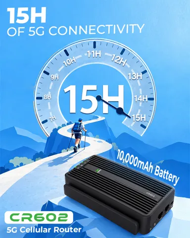
CR602_15H_5G_Connectivity_EN.jpg
Download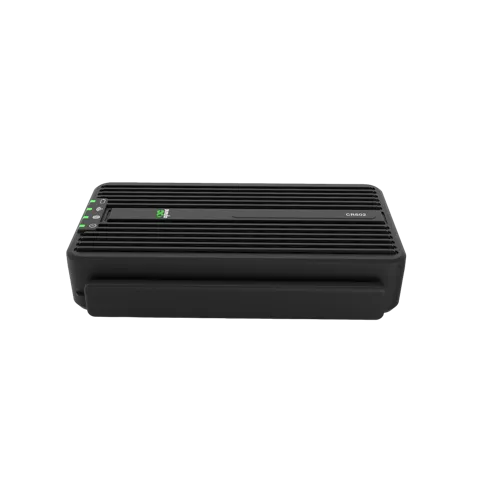
CR602_Low_Angle_View_EN.png
Download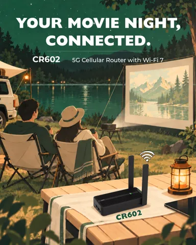
CR602_Outdoor_Movie_Night_EN.jpg
Download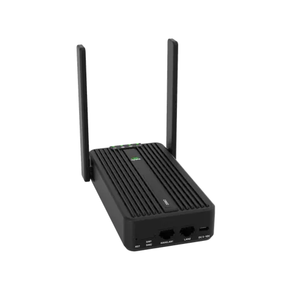
CR602_Perspective_View_EN.png
Download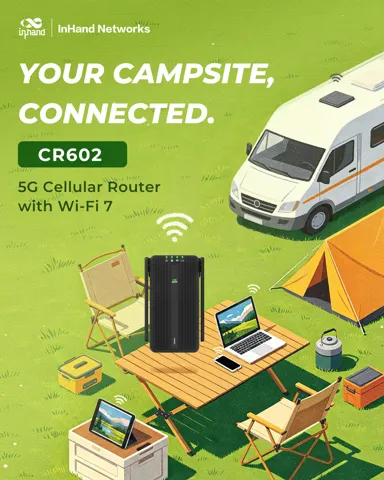
CR602_RV_Campsite_Connected_EN.jpg
Download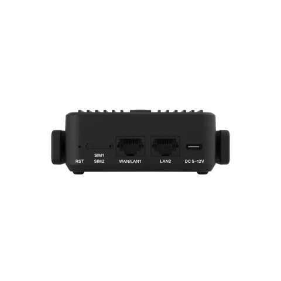
CR602_Rear_Ports_Closeup_EN.png
Download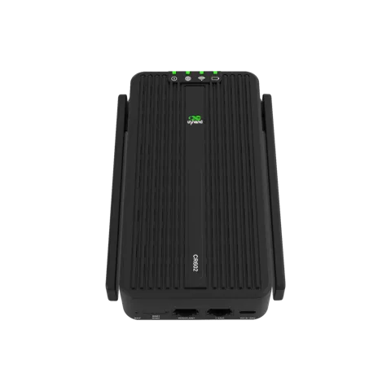
CR602_Top_View_Antennas_Folded_EN.png
Download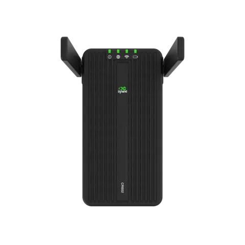
CR602_Top_View_Antennas_Open_EN.png
DownloadODU12
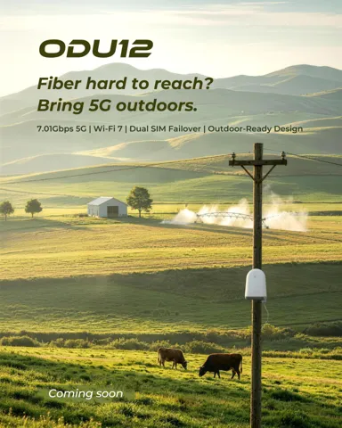
ODU12_Rural_Outdoor_5G_Coming_Soon_EN.png
Download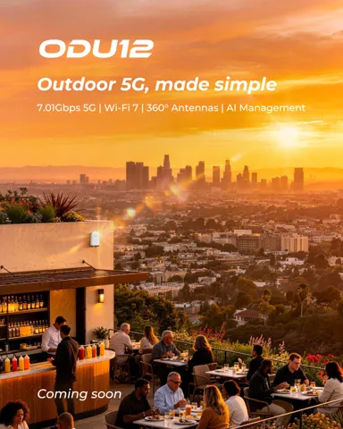
ODU12_Urban_Outdoor_5G_Coming_Soon_EN.png
Download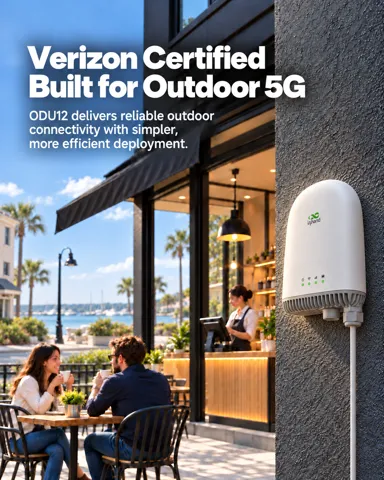
ODU12_Verizon_Certified_EN.png
Download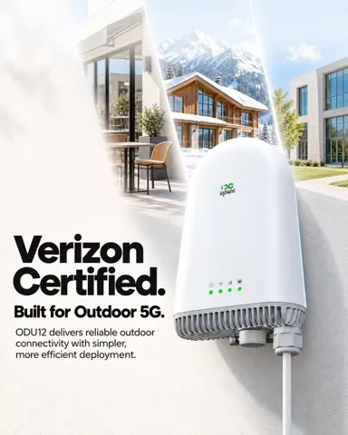
ODU12_Verizon_Certified_V2_EN.jpg
Downloadvideos
ODU12_Creative_Video_EN
DownloadODU302
brochures
ODU302_Flyer_EN.pdf
Download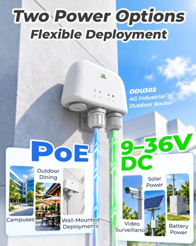
ODU302_Two_Power_Options_EN.png
DownloadCloud Service
InCloud Manager
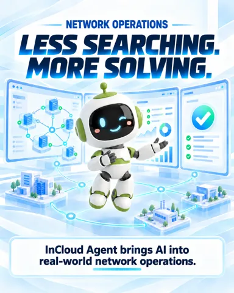
InCloud-Manager_1_EN.png
Download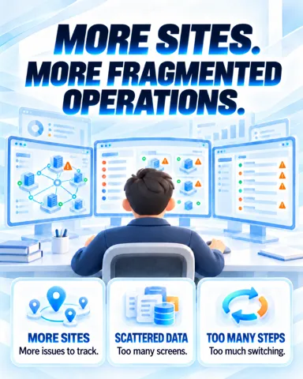
InCloud-Manager_2_EN.png
Download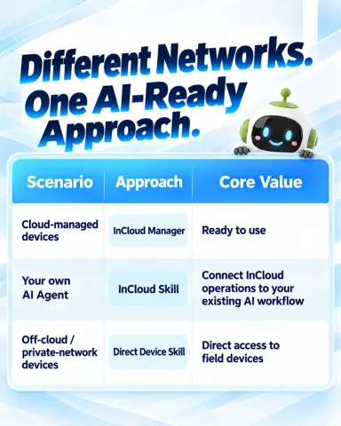
InCloud-Manager_3_EN.png
Download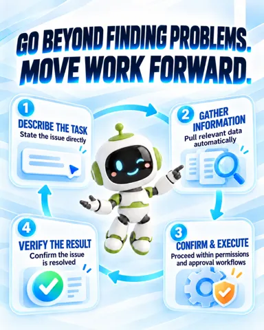
InCloud-Manager_4_EN.png
Download